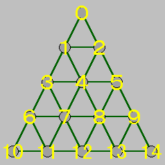

今回はもう少しだけサイズを大きくしたペグ・ソリテアに挑戦してみましょう。左図は「チャイニーズ・チェッカー」と呼ばれるペグ・ソリテアです。15 個の点が三角形に並んでいて、そこにペグを配置します。ペグは別のペグをひとつだけ跳び超えることで、任意の方向へ移動することができます。もちろん、着地する地点が空いていなければ、跳び越えることはできません。15 個のペグの中からひとつのペグを取り除き、最後にひとつだけペグが残る跳び方の最短手数を求めることにします。
それではプログラムを作りましょう。使用するプログラミング言語はＣ言語です。まず、ペグの跳び先表を定義します。下図のように座標を定義すると、跳び先表は次のようになります。

リスト：跳び先表の定義
const char jump_table[][SIZE] = {
{1, 3, 2, 5, -1}, /* 0 */
{3, 6, 4, 8, -1}, /* 1 */
{4, 7, 5, 9, -1}, /* 2 */
{1, 0, 4, 5, 6, 10, 7, 12, -1}, /* 3 */
{7,11, 8,13, -1}, /* 4 */
{2, 0, 4, 3, 8, 12, 9, 14, -1}, /* 5 */
{3, 1, 7, 8, -1}, /* 6 */
{4, 2, 8, 9, -1}, /* 7 */
{4, 1, 7, 6, -1}, /* 8 */
{5, 2, 8, 7, -1}, /* 9 */
{6, 3,11,12, -1}, /* 10 */
{7, 4,12,13, -1}, /* 11 */
{7, 3, 8, 5, 11, 10, 13, 14, -1}, /* 12 */
{8, 4,12,11, -1}, /* 13 */
{9, 5,13,12, -1}, /* 14 */
};
今回は最初に取り除くペグの位置を 4 番としてパズルを解くことにします。
次にグローバル変数を定義します。
リスト：グローバル変数の定義
/* 盤面 */
char board[SIZE] = {
1, 1, 1, 1, 0,
1, 1, 1, 1, 1,
1, 1, 1, 1, 1,
};
char move[MAX_JUMP][2]; /* 手順を格納 */
int count = 0; /* 解の総数をカウント */
int jump_limit; /* 探索する手数 */
盤面は配列 board で表します。探索はこの配列を直接書き換え、バックトラックするときに元の値に戻します。移動手順は配列 move に格納します。ペグが 13 回移動すると盤上のペグはひとつになるので、MAX_JUMP は 13 となります。残りのプログラムは 13 穴盤とほとんど同じなので、説明は省略します。詳細は プログラムリスト１ をお読みください。
それでは実行結果を示します。あいかわらず Pentium 166 MHz のオンボロマシンで実行しました。
・・・手数 9 を探索中・・・ ・・・手数 10 を探索中・・・ ・・・手数 11 を探索中・・・ (11, 4)( 9, 7)( 1, 8)( 2, 9)( 6, 1)(13,11)( 0, 3,12)(11,13)(14, 5,12)(13,11)(10,12) ・・・ 省略 ・・・ (11, 4)(13,11)( 9, 7)( 6, 8)( 2, 9)( 1, 6)(10, 3, 5)( 9, 2)( 0, 5,12)(11,13)(14,12) 総数 154 個, 時間 1875
この結果はファイルにリダイレクトした場合です。11 手で解くことができました。どの手順でもペグの最終位置は 12 番です。そこで、手数の制限をはずして調べてみたのですが、やっぱり 12 番しかありませんでした。つまり、最初に 4 番のペグを取り除いた場合、補償型の解は存在しないということです。
このプログラムでは、盤面上にペグがあるかチェックするために繰り返しを使っています。このため、ペグの数が少なくなると、無駄な繰り返しが多くなってしまいます。残っているペグを簡単に求めることができれば、実行速度はもう少し速くなるかもしれません。そこで、「双方向リスト (doubly linked list) 」を使ってみることにしました。双方向リストを使った高速化は 参考文献 [3] が参考になります。
一般には、双方向リストよりも「連結リスト (linked list) 」の方がよく使われます。連結リストは、データを格納する「セル (cell) 」をつなげて構成するデータ構造です。連結リストの場合、セルには次のセルを指し示すデータしか格納していないので、セル間の移動は前から後ろへの 1 方向しかできません。
双方向リストは、名前が示すように前のセルを指し示すデータも格納しています。このことにより、前後どちらでもリストをたどることができます。また、双方向リストは、削除したデータを再挿入することが簡単に行えます。今回のプログラムには適したデータ構造なのです。
ところが実際に試したところ、平均すると 1.77 [s] で、ほんの 5 ％程度しか速くなりませんでした。どうやら、ペグの数が少なくなる前に、行き詰まることが多いようです。ですが、それだけでは納得できなかったので、参考文献 [3] の順列生成プログラムを使い、双方向リストの効果を確認してみました。
| 実行環境 | N | 単純版 | 高速版 | 相対比 |
|---|---|---|---|---|
| 80386SX / 16MHz | 9 | 29.2 | 16.7 | 0.57 |
| Pentium / 166MHz | 11 | 38.2 | 28.0 | 0.73 |
80386SX / 16 MHz の実行結果は 参考文献 [3] から引用しました。双方向リストの効果は確かにありますが、昔の環境ほど高くはありません。CPU の高性能化やコンパイラの最適化技術の進歩により、単純版でも高速に実行できるようになったのでしょう。小さなプログラムですから、キャッシュの効果が大きいのかもしれませんね。この結果を見ると、チャイニーズ・チェッカーの解法プログラムで双方向リストの効果が少ないのも当然かな、と思いました。
/*
* checker.c : チャイニーズチェッカーの解法
*
* Copyright (C) 2000 Makoto Hiroi
*/
#include <stdio.h>
#include <stdlib.h>
#include <time.h>
#define SIZE 15
#define MAX_JUMP 13
/* 跳び表 */
const char jump_table[][SIZE] = {
{1, 3, 2, 5, -1}, /* 0 */
{3, 6, 4, 8, -1}, /* 1 */
{4, 7, 5, 9, -1}, /* 2 */
{1, 0, 4, 5, 6, 10, 7, 12, -1}, /* 3 */
{7,11, 8,13, -1}, /* 4 */
{2, 0, 4, 3, 8, 12, 9, 14, -1}, /* 5 */
{3, 1, 7, 8, -1}, /* 6 */
{4, 2, 8, 9, -1}, /* 7 */
{4, 1, 7, 6, -1}, /* 8 */
{5, 2, 8, 7, -1}, /* 9 */
{6, 3,11,12, -1}, /* 10 */
{7, 4,12,13, -1}, /* 11 */
{7, 3, 8, 5, 11, 10, 13, 14, -1}, /* 12 */
{8, 4,12,11, -1}, /* 13 */
{9, 5,13,12, -1}, /* 14 */
};
/* 盤面（４の位置にペグが無い状態） */
char board[SIZE] = {
1,
1, 1,
1, 0, 1,
1, 1, 1, 1,
1, 1, 1, 1, 1,
};
/* 跳び手順を格納 */
char move[MAX_JUMP][2];
/* 解の総数をカウント */
int count = 0;
/* 探索する手数 */
int jump_limit;
/* ペグを動かす */
void move_piece( int n, int from, int del, int to )
{
board[from] = 0;
board[del] = 0;
board[to] = 1;
move[n][0] = from;
move[n][1] = to;
}
/* ペグを元に戻す */
void back_piece( int from, int del, int to )
{
board[from] = 1;
board[del] = 1;
board[to] = 0;
}
/* 手順を表示 */
void print_move( void )
{
int i, j;
for( i = 0, j = 1; i < MAX_JUMP; i++, j++ ){
printf("(%2d,%2d", move[i][0], move[i][1] );
for( ; j < MAX_JUMP; i++, j++ ){
if( move[i][1] != move[j][0] ) break;
printf(",%2d", move[j][1] );
}
printf(")");
}
printf("\n");
}
/* 手順の探索 */
void search_move( int n, int jc )
{
if( jc > jump_limit ) return;
if( n == MAX_JUMP ){
count++;
print_move();
} else {
int from, del, to, i;
for( from = 0; from < SIZE; from++ ){
if( !board[from] ) continue; /* ペグが無い */
i = 0;
while( (del = jump_table[from][i++]) != -1 ){
to = jump_table[from][i++];
if( board[del] && !board[to] ){
/* 跳び越せる */
move_piece( n, from, del, to );
search_move( n + 1, (move[n-1][1] == from ? jc : jc + 1) );
back_piece( from, del, to );
}
}
}
}
}
int main()
{
int move, start, end;
move_piece( 0, 11, 7, 4 ); /* 11 からスタート */
start = clock();
for( move = 9; move <= MAX_JUMP; move++ ){
printf("・・・手数 %d を探索中・・・\n", move );
jump_limit = move;
search_move( 1, 1 );
if( count ) break;
}
end = clock();
fprintf(stderr, "総数 %d 個, 時間 %d\n", count, end - start );
return 0;
}
/*
* checker1.c : チャイニーズチェッカーの解法
*
* Copyright (C) 2000 Makoto Hiroi
*
* 双方向リストを使った高速化に挑戦
* 5 % 程度の高速化しかできなかった
*/
#include <stdio.h>
#include <stdlib.h>
#include <time.h>
#define SIZE 15
#define MAX_JUMP 13
/* 双方向リスト */
typedef struct dnode {
int postion;
struct dnode *prev;
struct dnode *next;
} DNODE;
/* 双方向リストヘッダ */
DNODE *header;
/* 盤面 */
DNODE *board[SIZE]; /* NULL：ペグ無し */
/* 跳び表 */
const char jump_table[][SIZE] = {
{1, 3, 2, 5, -1}, /* 0 */
{3, 6, 4, 8, -1}, /* 1 */
{4, 7, 5, 9, -1}, /* 2 */
{1, 0, 4, 5, 6, 10, 7, 12, -1}, /* 3 */
{7,11, 8,13, -1}, /* 4 */
{2, 0, 4, 3, 8, 12, 9, 14, -1}, /* 5 */
{3, 1, 7, 8, -1}, /* 6 */
{4, 2, 8, 9, -1}, /* 7 */
{4, 1, 7, 6, -1}, /* 8 */
{5, 2, 8, 7, -1}, /* 9 */
{6, 3,11,12, -1}, /* 10 */
{7, 4,12,13, -1}, /* 11 */
{7, 3, 8, 5, 11, 10, 13, 14, -1}, /* 12 */
{8, 4,12,11, -1}, /* 13 */
{9, 5,13,12, -1}, /* 14 */
};
/* 跳び手順を格納 */
char move[MAX_JUMP][2];
/* 解の総数をカウント */
int count = 0;
/* 探索する手数 */
int jump_limit;
/* 双方向リストのメモリ取得 */
DNODE *get_dnode( void )
{
DNODE *node = malloc( sizeof( DNODE ) );
if( node == NULL ){
fprintf( stderr, "Out of Memory\n" ); exit( 1 );
}
return node;
}
/* 初期化 */
void init_peg( void )
{
int i;
/* ヘッダセット */
header = get_dnode();
header->postion = SIZE; /* 範囲外のデータをセット */
header->next = header; /* 自分だけの循環リストを作る */
header->prev = header;
/* ペグデータセット */
for( i = 0; i < SIZE; i++ ){
DNODE *node;
if( i == 4 ){
board[i] = NULL;
continue;
}
node = get_dnode();
node->postion = i;
node->prev = header->prev;
node->next = header;
header->prev->next = node;
header->prev = node;
board[i] = node;
}
}
/* ペグを動かす */
DNODE *move_piece( int n, int from, int del, int to )
{
DNODE *j_peg = board[from];
DNODE *r_peg = board[del];
board[from] = NULL;
board[del] = NULL;
board[to] = j_peg;
move[n][0] = from;
move[n][1] = to;
j_peg->postion = to;
/* 双方向リストから削除 */
r_peg->prev->next = r_peg->next;
r_peg->next->prev = r_peg->prev;
return r_peg;
}
/* ペグを元に戻す */
void back_piece( int from, int del, int to, DNODE* r_peg )
{
DNODE* j_peg = board[to];
j_peg->postion = from;
board[from] = j_peg;
board[del] = r_peg;
board[to] = NULL;
/* 双方向リストへ戻す */
r_peg->prev->next = r_peg;
r_peg->next->prev = r_peg;
}
/* 手順を表示 */
void print_move( void )
{
int i, j;
for( i = 0, j = 1; i < MAX_JUMP; i++, j++ ){
printf("(%2d,%2d", move[i][0], move[i][1] );
for( ; j < MAX_JUMP; i++, j++ ){
if( move[i][1] != move[j][0] ) break;
printf(",%2d", move[j][1] );
}
printf(")");
}
printf("\n");
}
/* 手順の探索 */
void search_move( int n, int jc )
{
if( jc > jump_limit ) return;
if( n == MAX_JUMP ){
count++;
print_move();
} else {
DNODE *peg = header;
while( (peg = peg->next) != header ){
int from = peg->postion;
int del, to, i = 0;
while( (del = jump_table[from][i++]) > 0 ){
to = jump_table[from][i++];
if( board[del] && !board[to] ){
/* 跳び越せる */
DNODE* r_peg = move_piece( n, from, del, to );
search_move( n + 1, (move[n-1][1] == from ? jc : jc + 1) );
back_piece( from, del, to, r_peg );
}
}
}
}
}
int main()
{
int move, start, end;
start = clock();
/* 双方向リストの初期化 */
init_peg();
move_piece( 0, 11, 7, 4 ); /* 11 からスタート */
for( move = 9; move <= MAX_JUMP; move++ ){
printf("・・・手数 %d を探索中・・・\n", move );
jump_limit = move;
search_move( 1, 1 );
if( count ) break;
}
end = clock();
fprintf( stderr, "総数 %d 個, 時間 %d\n", count, end - start );
return 0;
}